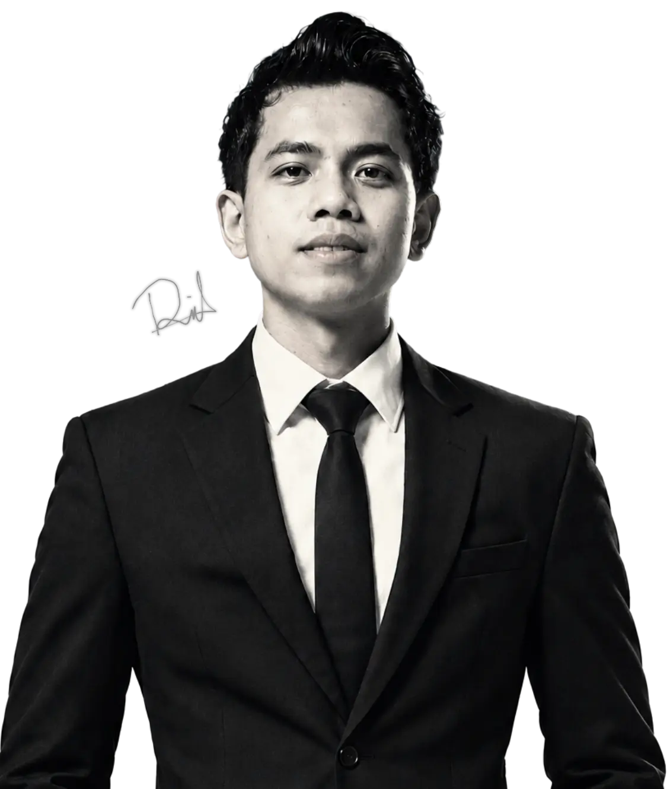

Hi, I'm Muhammad Rijal
Lecturer in the Department of Informatics and Computer Engineering at Politeknik Negeri Ujung Pandang. A lifelong learner passionate about web development, machine learning, computer vision, and deep learning. I enjoy exploring emerging technologies, experimenting with new ideas, and developing innovative, practical solutions that bridge theory and real-world applications. Beyond teaching and research, I am committed to continuous learning, sharing knowledge, and empowering others to explore technology, develop their technical skills, and create meaningful digital solutions.

Teaching, researching, and building.
Between the classroom, the lab, and the engine control room of a ship.
I'm Muhammad Rijal, S.Kom., M.Kom., a Lecturer in the Department of Computer and Informatics Engineering at Politeknik Negeri Ujung Pandang, where i teach in the D4 Multimedia and Network Engineering program.
As a lifelong learner, I am passionate about web development, machine learning, computer vision, and deep learning. I enjoy exploring emerging technologies and developing innovative, practical solutions, particularly in AI-based detection systems and web applications for education, research, and real-world applications..
- Makassar, South Sulawesi, Indonesia
- Master of Computer Science (M.Kom.) — Computer Systems
- Interested in Machine Learning, Deep Learning, NLP & Web Development
Machine Learning | Deep Learning
RExploring and developing intelligent systems using machine learning and deep learning techniques for data analysis, computer vision, and real-world applications.
Web Systems
Building modern, functional, and user-friendly websites and web applications to deliver practical solutions for real-world needs.
Education
Developing engaging learning materials and teaching programming, multimedia workshops, programming algorithms, Internet of Things (IoT), and UI/UX design. Passionate about supporting curriculum development and creating practical learning experiences that enhance students' technical skills and creativity.
Selected work
Click a card to see technical details, results, and the technologies used.
Professional journey
From a web developer internship to teaching and research at a vocational university.
Research & Publications
Research that starts from real problems in the field and is tested against data.
Certificates
Credentials you can verify directly with the issuer.
Tech stack
The tools I use every day for research, production, and teaching.
Have an idea, a project,
or want to collaborate?
Open to research collaboration, system development, and invitations to teach or speak.